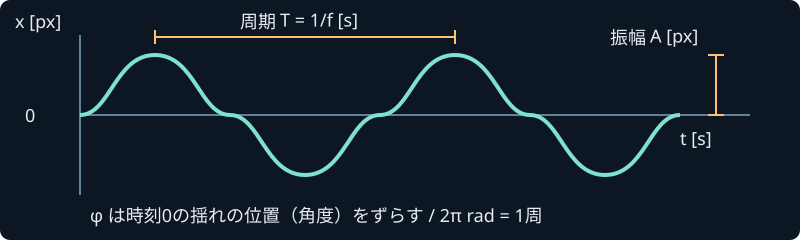

動かして観察する
初期状態は停止。全画面の明滅や音はありません。数値はこの教材内の論理ピクセル（px）です。画面の拡大率や端末の物理解像度とは別です。
停止中 / t = 0.000s
sinへなめらかなノイズを足します。ノイズの強さ0で基本sinと一致します。
記号と単位を対応させる

| 記号 | 意味・単位 | 変えると |
|---|---|---|
| A | 振幅 / Amplitude [px] | 中心からの最大の横変位が変わる。 |
| f | 周波数 / Frequency [Hz = 回/s] | 1秒あたりの往復回数が変わる。0Hzなら時間変化しない。 |
| t | 経過時間 / Time [s] | 再生中に増え、停止中は固定される。 |
| φ | 位相 / Phase [rad] | 揺れの開始位置が変わる。2πradで1周。 |
| x(t) | 先端の横変位 / Displacement [px] | 画面の中心から左右へずれる量。 |
例: A=24px、f=1Hz、φ=0なら、t=0秒で0px、0.25秒で+24px、0.5秒で0px、0.75秒で−24px。これは中心→右→中心→左→中心へ1秒で往復する動きです。
規則と不規則を比べる
- 単純な周期運動: ひとつのsin。振幅と周期が一定で、機械的に見えます。
- 複数の周期の合成: A × {0.65 sin(2πft+φ) + 0.25 sin(2π×1.71ft+0.7) + 0.10 sin(2π×2.63ft+1.2)}。各成分の速さが異なり、単一の周期が目立ちにくくなります。振幅の上限はAです。
- 毎回独立した疑似乱数: v区間/sごとに−1〜1の新しい値を決め、N[px]を掛けます。値の間をつながないため、先端が突然飛びます。描画のたびに乱数を引かず、時刻の区間番号とシードから決めることでfps依存を避けています。振幅A・周波数f・位相φはこのモードには使いません。
- 時間的になめらかなノイズ: 隣の疑似乱数値a、bを、s(u)=u²(3−2u)でつなぎます。uは区間内の0〜1の位置、ノイズ値は(1−s)a+sb。これへ強さN[px]を掛けて基本sinに足します。上限はA+Nです。これは自作の1次元の値ノイズで、燃焼現象を解いていません。
シード（Seed）は乱数列の出発点を選ぶ整数。同じシード、同じパラメーター、同じ時刻なら同じ値を得ます。異なるシードでは別の揺れになります。ノイズ変化速度vの単位は「補間区間/s」で、ノイズに明確な周期があるという意味のHzではありません。v=0ならノイズは時間変化しません。
ばねと減衰を使う揺れは、力・速度を積分する別の方法です。この初版のデモには実装していません。
30/60/120fpsで、時間の速さは変わる？
描画回数を変えてもx(t)の式は同じです。「1枚ごとにtを1増やす」と、描画枚数によって時間が速くなります。この実演は実時間の秒数から計算します。上の選択肢は描画を間引く上限で、ブラウザがそのfpsで表示できる保証ではありません。30fpsの項目は低い描画頻度での正しさを試すもので、エンジンの60fps目標を下げません。
| 描画間隔の仮定 | 1枚の間隔 | 共通時刻の x(t) |
|---|---|---|
| 30fps | 1/30秒 | — |
| 60fps | 1/60秒 | — |
| 120fps | 1/120秒 | — |
表は直近の整数秒での計算値の比較です。すべての描画頻度で同じ時刻を選んでいます。描画間隔の間の動きや、実際に提示されたfpsの測定結果ではありません。Nodeの検証では各頻度で1秒ずつ進め、同時刻の一致を調べます。
エイリアシング（Aliasing、折返し）は、速い動きをまばらに観測すると、別の遅い動きに見えることです。たとえば30fpsで20Hzのsinを観測すると10Hzに見え得ます。この教材の周波数上限は8Hzですが、合成波の最高成分は2.63倍の21.04Hzなので、30fpsの比較では折返しを観察できます。ノイズの高い周波数成分も同様です。
補間は観測点の間をなめらかにつなぐ操作です。失われた元の速い動きを必ず復元するものではありません。dtは1回進める時間幅。コマ送りは1/60秒です。ゲーム本体では固定刻みと描画の補間を組み合わせます。
動いているコードを読む
// この実演で使用している式（px、秒、Hz、rad）。
const sine = amplitude * Math.sin(2 * Math.PI * frequency * t + phase);
const x = sine + noiseStrength * smoothNoise(t * noiseSpeed, seed);計算はflame-math.js、入力・描画・停止はflame.jsに分離しています。炎の輪郭は先端のxだけを使う2次元の曲線です。シミュレーションの炎アセットや熱源として使用するAPIではありません。
一次資料: ECMA-262: Math.sin（角度はrad）、WHATWG: Animation frames。確認 2026-11-03。ノイズ式と図は本プロジェクトで新規作成。外部図版の転載なし。
← 学習入口へ戻る